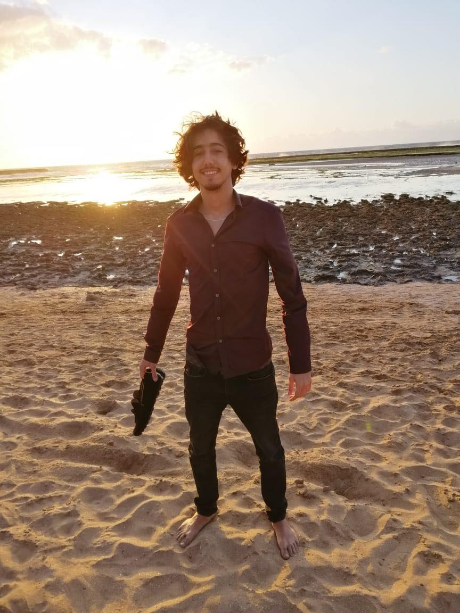

About me
Hi, my name is Amine. I am currently an IMD student, and
this is my 1st HTML page ever.
I have a bachelor's degree in International Business Management, and a Post-Graduate Certificate in Marketing Management.
Thanks to my background, I had the opportunity to live and study in four different countries: Morocco (my home country),
France, Spain and Canada.
These exeperiences were all extremely eye opening, and shaped me to who I am today.
Indeed, I now consider myself as a versatile individual and a fast-learner, since I am used to adapting myself to various environments and cultures.
I also speak multiple languages: Native in French, Arabic (Moroccan dialect), English (working proficiency) and Spanish (un poquito).
In a few months, I will hopefully be speaking five languages once I have wrapped my head around HTML.
Here is one of my many favorite quotes from this amazing author:
"Accept - then act. Whatever the present moment contains, accept it as if you had chosen it. Always work with it, not against it." -Eckhart Tolle, The Power of Now.
Down below is a picture of one of my favorite spots back in Morocco:
Here is a list of my hobbies:
- Watching and playing sports.
- Reading self-help books.
- Walking in nature.